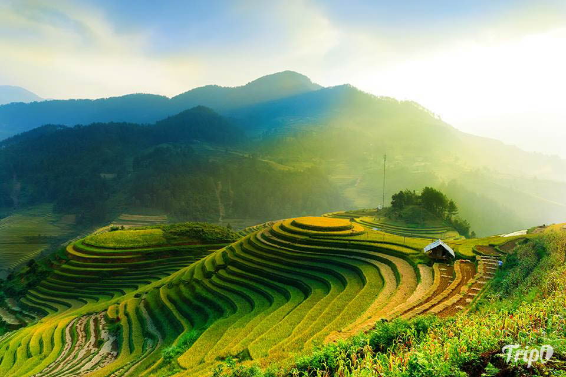
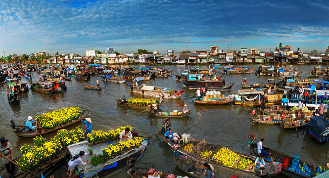
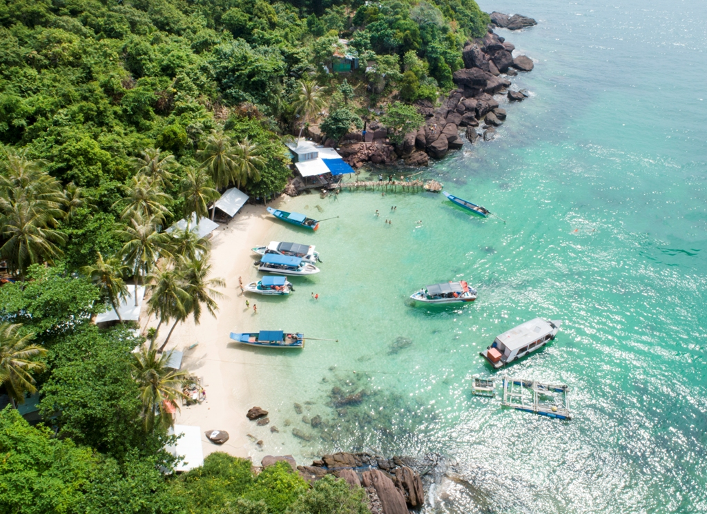
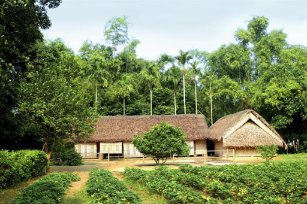

TOUR HOT!!!
Mù Căng Chải
Chắc hẳn địa danh Mù Cang Chải không còn xa lạ với những ai yêu thiên nhiên và con người Tây Bắc. Nổi bật hơn hẳn là những hình ảnh ruộng bậc thang Mù Cang Chải mùa lúa chín tháng 9 tháng 10. Tất cả được ví như những bức tranh đa sắc màu được thiên nhiên ban tặng cho những ai đã đến Mù Cang Chải và sẽ đến để đi du lịch Mù Cang Chải.

Tour du lịch miền Bắc
Hành trình liên tuyến Hạ Long - Ninh Bình - Sapa hứa hẹn sẽ đưa du khách tới những danh lam thắng cảnh đặc sắc của Miền Bắc và miền Tây Bắc Việt Nam, với Thủ đô Hà Nội mang trong mình nét trầm ngâm của lịch sử, mảnh đất Cố Đô, ngôi chùa Tam Chúc lớn nhất thế giới...Từ du lịch hành hương đến du lịch trải nghiệm, khám phá các di sản Thiên Nhiên, thưởng thức các đặc sản từng vùng miền, dân tộc...Du khách sẽ cảm thấy tự hào khi sống trên mảnh đất hình chữ S nhiều cảnh sắc tuyệt vời này.
Du lịch sông nước miền Tây
Diễn ra trong 2 ngày 2 đêm. Du khách sẽ được chu du miền Đất Mũi, nơi cuối cùng của Tổ quốc để cảm nhận hết cái "chất" của vùng Đồng Bằng Sông Cửu Long rộng lớn với hệ sinh thái rừng ngập mặn rất đa dạng, ngắm cảnh thiên nhiên vả thưởng thức nhiều đặc sản hấp dẫn của mảnh đất địa cuối Tổ Quốc.

Trải nghiệm ở đảo xanh Phú Quốc
Thời điểm lý tưởng nhất để du lịch Phú Quốc là từ khoảng tháng 11 đến tháng 4 năm sau. Đây là mùa khô ở phương Nam, trời ít mưa, biển lặng, sóng êm và nắng ấm rất thích hợp cho các hoạt động du lịch ngoài trời. Mùa này thích hợp cho những tour du lịch nghỉ dưỡng, không thích hợp cho khách đi bụi hoặc đi phượt.

Về thăm quê Bác
Có một ngôi làng mà những hình ảnh thân yêu gần gũi đã đã in sâu vào tiềm thức người Việt. Nơi ấy đẹp như một bức tranh yên bình, có những mái nhà tranh dưới những lũy tre xanh , có nhịp võng trưa hè cùng tiếng ru à ơi của mẹ , có câu dân ca mênh mang cùng đồng đất núi sông… Ngôi làng mang tên làng Sen vì luôn ngát hương sen; là quê hương của Bác Hồ kính yêu, người con ưu tú của dân tộc.
